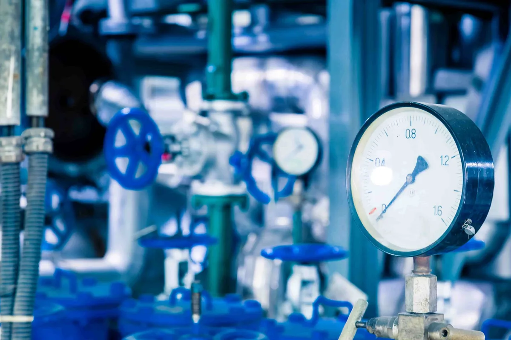

Lock Shield Cart understands that fire protection systems have to function absolutely without failure. Fire pumps are a very significant element of the fire protection equipment installation. This is why we sell UL listed fire pumps that are very stringent on safety standards and reliability. Fire pumps are tested to ensure they function well even in the midst of emergencies. Fire can strike at any minute, and in such emergencies, there is no place for risks. Moreover, the required water pressure must be generated on time. Selecting the right equipment, which is duly certified, provides dependable safety to life, property, and investment. UL listed fire pumps can function for sprinkler systems, hydrant systems, and other fire systems by providing essential water supplies. In too many buildings, the water supply originating from the main water line does not have adequate pressure to control the fire.
A fire pump raises the water pressure to an optimal level where the system can respond accordingly. Be it a commercial building, warehouse, factory, residential tower, or marine facility, a rightly selected pump plays a crucial role in firefighting. Being one of the trusted suppliers in the UAE, we ensure that our Ul listed fire pumps meet the requirements set by the local civil defense. We assist customers in selecting the right capacity and configuration, as per the building type and the design of the fire system.
How Fire Pumps Work in Real Situations
In order to understand the significance of UL Listed Fire Pumps, it is important that the reader first know the workings of the device. A fire pump generally comes connected with a water source like a water tank or an underground reservoir of water, or even with the municipal water supply line. As the pressure falls in the system due to the operation of sprinklers or hydrants, the fire pump starts automatically. Then it boosts the pressure of the water to adequate levels so that the fire can be brought under control or extinguished completely. There are many types of UL listed fire pumps available depending on the requirements of the system.
Electric pumps are ideal in areas where reliable power is assured, while diesel pumps are usually standby systems or applied where power failure may be an issue. Manufactured from both varieties, each pump is designed to withstand the harshest of conditions. The testing during the listing process ensures that UL Listed Fire Pumps are durable, capable of pressure output, material strength, and other overall performances. Such certification proves the equipment meets the minimum safety standards at an international level. In case of a fire hazard, all appliances must act instantaneously and without a stop. Certified equipment instills in building owners a sense of assurance in the operation of such a system. We help guide our customers in picking out the most appropriate pumps by considering the flow rate, pressure requirements, system design, and building size. A proper installation of the correct fire pump will ensure that the entire fire protection system operates effectively in case of an emergency.
Applications Across Commercial, Industrial, and Residential Projects
UL Listed Fire Pumps are employed in different types of properties within the UAE. High-rise residential buildings require fire pumps to provide water to the upper floors. Shopping malls and office buildings require fire pumps to improve sprinklers’ performance. Warehouses require fire pumps to ensure the protection of valuable goods. Within an industrial setting, it is expected that fire risks are higher due to the inventory stored within the building. In such situations, fire protection systems play a vital role. Additionally, it is expected within the warehouse setting that there is hazardous equipment within the warehouse. In such situations, fire pumps play an important role.
UL Listed Fire Pumps offer the necessary pressure for large-scale fire sprinklers and hydrant applications. For commercial properties, the fire pumps help in compliance with fire protection regulations. For residential projects, it ensures the safety of communities and families. Buying UL Listed Fire Pumps is not only about complying with the issues in the building codes. It is about the performance. These are manufactured with robust equipment. These pumps are the best because they have the power to withstand the demands and usage. The equipment does not compromise on failure. The failure rate is reduced, and the repair worry is diminished. Lock Shield Cart is committed to providing the best UL listed fire pumps to contractors, building managers, facility managers, and everyone in the region. Our experts ensure that the equipment provided matches the needs of the building. We help in maintaining fire safety while supplying the best and tested equipment.
Installation and Long-Term Performance
Installing UL listed fire pumps is equally important to the selection of the proper device. Installation ensures the proper functioning of the pump once it is activated. The pump needs to be properly connected to other facilities such as the water source, control panel, and power supply. The pump must be serviced on a regular basis to ensure that it is functioning properly. Testing the pump on a regular basis will be necessary to identify any problems that can occur with the pump. Such problems may involve the loss of pressure in the pump system, worn-out parts, and fuel system problems associated with a diesel pump.
Meeting Civil Defense regulations is a must in the UAE. Using UL Listed Fire Pumps helps simplify the process and meet all required guidelines. Certified equipment minimizes risks and maximizes the reliability of the system. At Lock Shield Cart, we strive to deliver dependable fire protection equipment. Our products, fire pumps in particular, have been certified to meet international standards. Ensuring the installation of tested fire pumps is crucial for the operation of the system during the most critical periods. With the best equipment, the protection of lives, properties, and businesses is facilitated with complete confidence.
Frequently Asked Questions
- What does UL listing signify in reference to fire pumps?
The UL listing of the fire pump indicates that it has been tested and certified to meet high-quality international standards for safety and performance. It assures the reliability of the pump for fire protection systems.
- Are UL Listed Fire Pumps Required in the UAE?
In many business and industrial projects, certified pumps must be used to comply with Civil Defense regulations. Such processes can be better managed during inspections.
- What types of fire pumps are available?
The most common types used are the electric motor-driven pump and the diesel engine-driven pump. This will depend on the type of power available in the building.